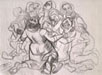
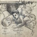
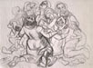
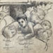
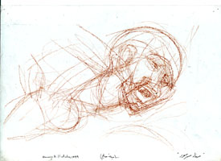
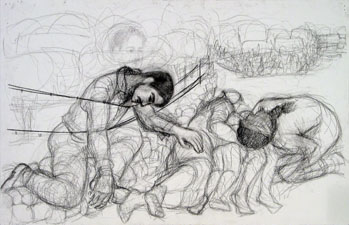

| Introduction |
| The Massacre |
| Northern Fields |
| Inside the Village |
| First Wave |
| Second Wave |
| Third Wave |
| Fourth Wave |
| Sixth </td> |
| Seventh |
| Ninth |
| Roster of Victims |
| Witnesses |
| Artist's Notes |
| Contact me/td> |
| Exit |
MEMORIAL on the 50th Anniversary of the Kafr Qasem Massacre
“Those Who Were Killed in the Ninth Wave of the Massacre”
The ninth and final wave of killing of the Kafr Qasem massacre of 1956 affected everyone who heard even a small part of its details. Perhaps it is the coldness or the killing and quantity of the dead, or the fact that it was mostly girls and women. Some of the women were pregnant and one was in her ninth month. But, it affected no one as deeply as those wounded survivors who had to watch helplessly.I will tell the story of the ninth, most painful wave of killing, strictly on the witness of what I read, heard, and recorded. The more I work on the subject, the more I draw, and the more I delve, the more anguished I feel. Kafr Qasem becomes Palestine and all the pain that has been poured down our throats throughout my life. Kafr Qasem becomes Iraq and Afghanistan. Kafr Qasem becomes Lebanon and Gaza, and all the pain now being pushed on us this month of July and into August of 2006 as the US, Israel, and the UN conduct genocide in Lebanon, beautiful Lebanon.

Safa Sarsour saw her son dead on the side of the road as the open truck that they were riding home in arrived at the Filmaya, the name of the spot where the massacre was taking place. She screamed as did all the women seeing all the bodies, some in piles on the side of the road. Some said that Safa went to her son and was shot over his body, and that her younger boy, who was 14 and was in the truck with her, followed and was also shot. Some said the truck raced on when the driver saw all the bloodied victims. I drew her straining to reach him as she must have been trying to in her anguish. The other women would ofcourse hold her both to comfort her and prevent her from falling.

I do not know if Safa did descend from the truck and go to her first son. Indications are that she was not able to. But the screaming of the women did alert the soldiers smoking fifteen meters away from the road. They were able to stop the truck by shooting its tires. Thus it would have been stopped very near the body of her first son. I did try a sketch based on that description, it would have been just before she would have been shot, bending over the body of her older son while the younger pushes foreward from her side to see his brother.

The sketch above is an exploration, building Safa's head from its basic internal bone structure and attempting to position it as I imagined her reaction on first reaching her son's body.

The Israeli border police forced the two men in the cab of the truck out and ordered the driver, Ibrahim Masarwa, to bring the women down. Thus he produced a small wooden step ladder for them saying "Sisters, come down now and have your identity card ready." After this, the two boys riding with the women were lined up with the two men who were in the cab. They stood them at side of the road. The one survivor of the truck load, Hana Amer, is quoted as saying that the soldiers let it be known that they were going to kill the men. On hearing this the women all began to yell and plead with the soldiers to leave the workers alone. The soldiers' response was that they, the women, would have their turn.
Two of the girls hid under the truck. I show their faces frozen in fright as they watch from behind the truck's tire while the women stand in a group pleading with the soldiers. The men and boys are shot immediately.

The males collapse in place and the wounded Masarwa begins to crawl out towards the olive trees. The two girls who are hiding begin to irrisistably come out to the mothers. Meanwhile, I imagine Safa, watching her 14 year old boy shot and fallen, immediately dashes to him who might not as yet breathed his last. I drew one of the elder women standing stands behind her to comfort her. No one mentioned this detail, but this is humanity.

It is told that the women begin to plead with the soldiers to spare them. I used this moment to create a group portrait of the women. I placed under each one her name and age in Arabic. I searched for their portraits and made an effort to make a likeness. This was the moment before death. They look out at the viewer who stands facing them as did the soldiers on that night when it was dark and fear ruled the village. Safa is still kneeling over her son, and the two girls, shocked and unable to cut and run, come out from under the truck to be with their elders.

The Israeli men begin shooting at the Palestinian women and the women sought comfort in each other. Then something happened which affected everyone. The women grouped together into one embrace and began to slowly turn as the bullets struck them. The Israeli men were without merci, bent on killing each and every one, leaving no wounded. According to Kafr Qasem residents, the 16 year old Hana Amer was in the middle and could hear the bullets thudding on the women. One after another the women and girls all fell in one place at which time Hana, wounded and bleeding fainted. There she remained till the following day when she spoke up as they were removing the dead. Sometimes, I think about these wounded victims who spent the night bleeding among the dead bodies of their family and friends. I consider how those hours etched themselves in momories, changing for all their futures the way they perceive their painful exhistence in the reality of Israel and the Arab states.
In my drawing of the embrace before death, I draw Kahmise Amer in the front She is first to begin falling. I show her wearing an abbaye, a tradition Arab coat, and her shoes fallen off her feet. Her son, Abu Butros, told me that on Wednesday afternoon when the curfew ended and they were allowed out of their homes, he found her shoes in the road along with pools of blood and other scattered possessions of the departed.

Watching the women be killed in this cold manner affects the wounded Ibrahim Masarwa beyond what he could bear. He struggled with his wounds and returned to the scene of the killing, yelling and cursing the cowardly killers and challenging them to kill him also. In this representation of Masarwa, I had it on good witness that the style of the fence was barbed wire over a short stone wall. Yes, I have seen such in Palestine. Most witnesses mention the olive trees next to the road but the one photograph which is available from that period of time shows a barren place with few trees. My olive trees in the background mistakenly are a bit more lush and numerous than the one photograph indicates. Masarwa's face is a likeness taken from his passport photo published in a kafr Qasem magazine.

Predictably, the soldiers do kill Masarwa as he approaches the fence. Witnesses said that they saw his blood on the fence on Wednesday afternoon when everyone went out in mass to look.
Later that night Saleh Ahmad Sarsour, comming home later than is normally permitted Kafr Qasemite, finds that there are flood lights illuminating the Filmaya. He knows that there is no electricity in the town, and that something out of the ordinary is taking place. He sees a scene of horrors, of trucks, carts, wagons, bicylces, dead bodies, pools of blood on the road, and in places piles of bodies. Among the dead, all 43 of them killed that night on that spot, one is his daughter, one is his nephew, and many are his friends, relative, and neighbors. He contemplates the scene in shock and begins to load some of the bodies into his truck when suddenly lights are aimed at him and soldiers approach. He is foced to remove the bodies. They discuss whether to kill him or not.*
Web posting and author: Samia A. Halaby,October 2006.
![[Art on the Net]](/images/artnet_button.gif)